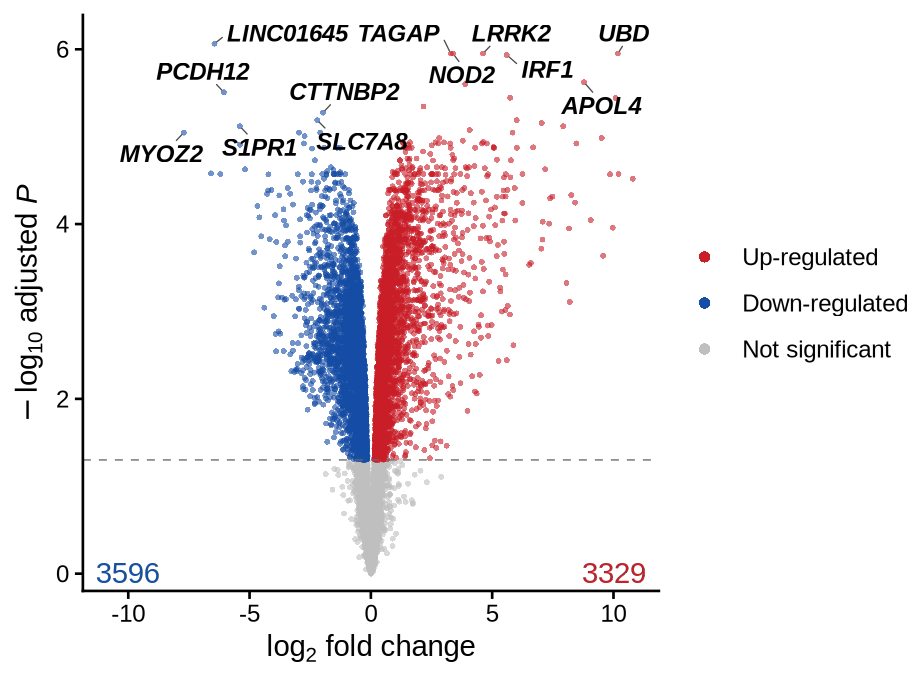
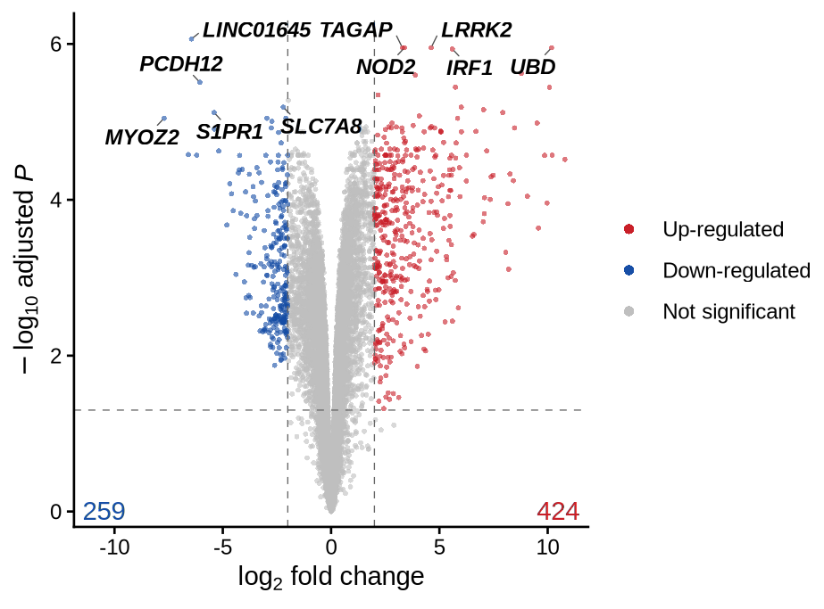
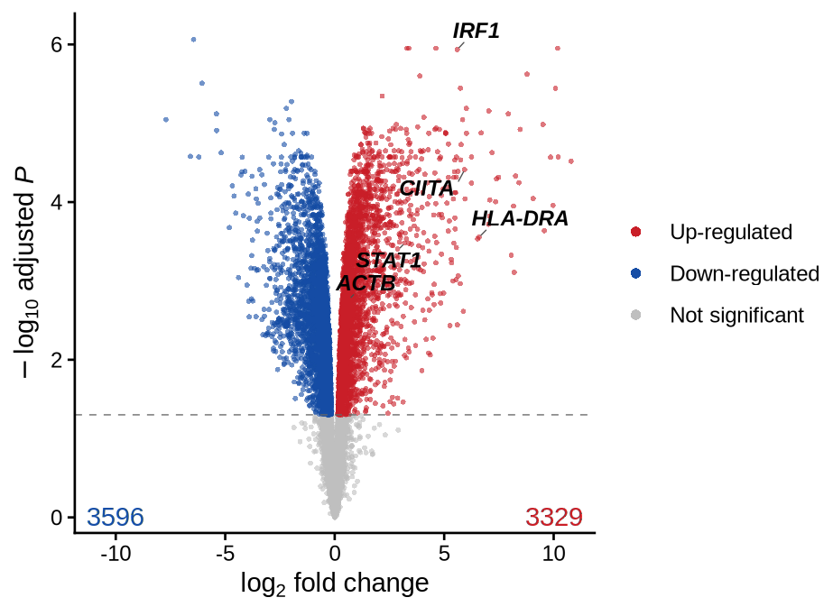
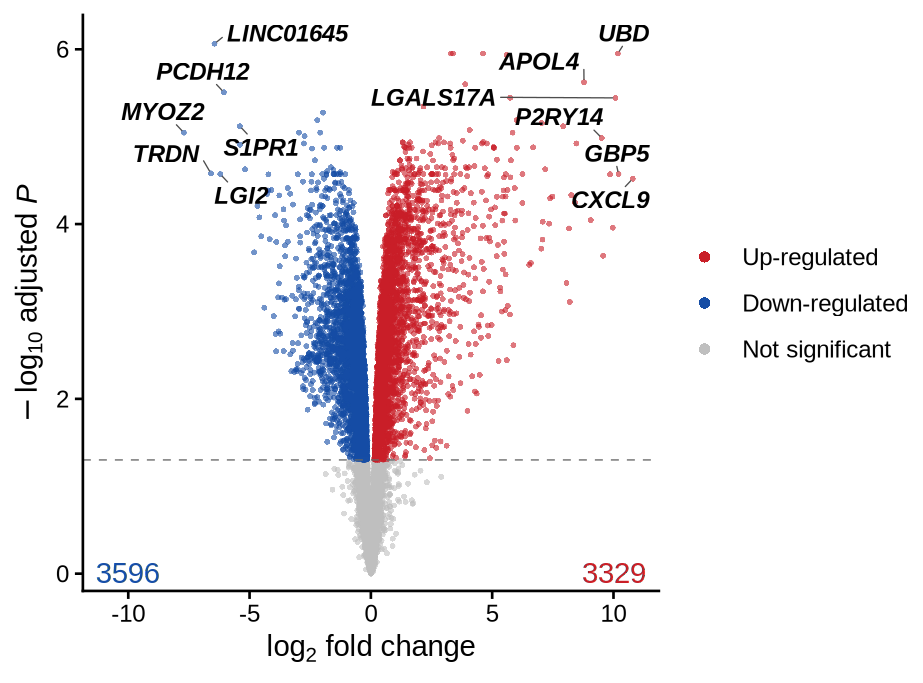
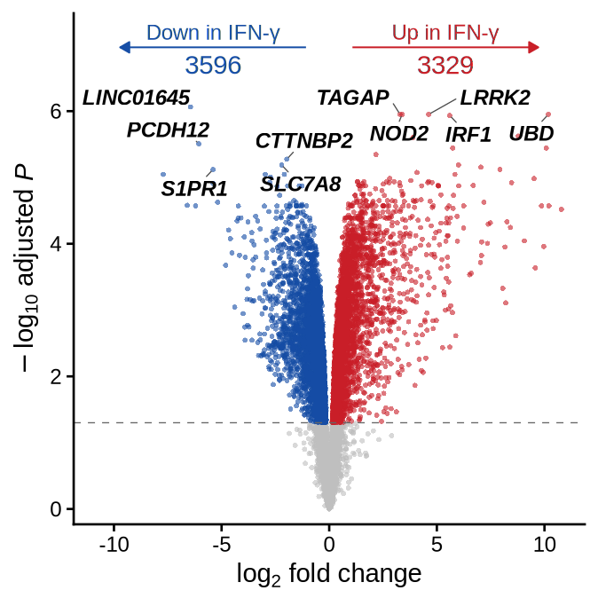
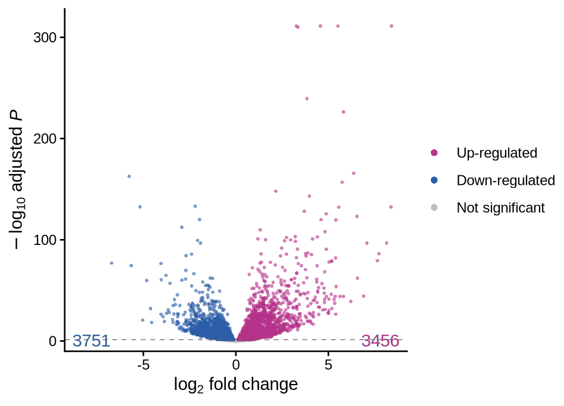
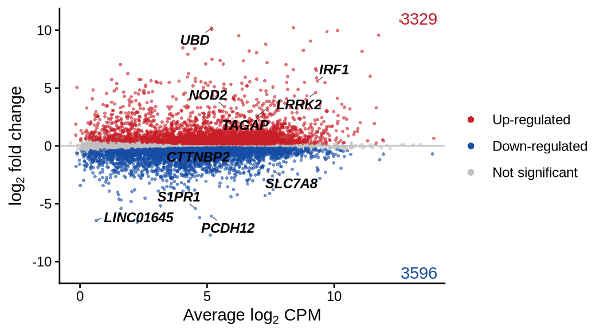
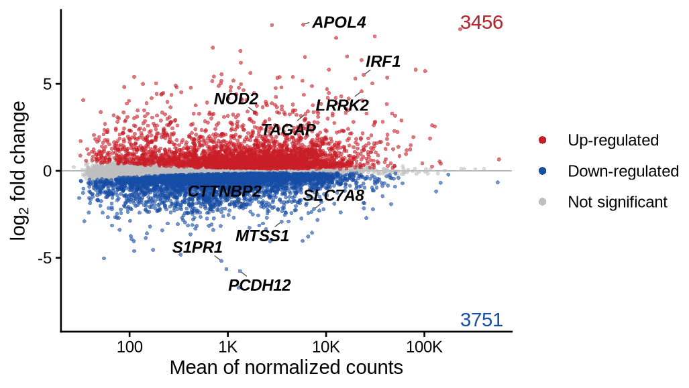
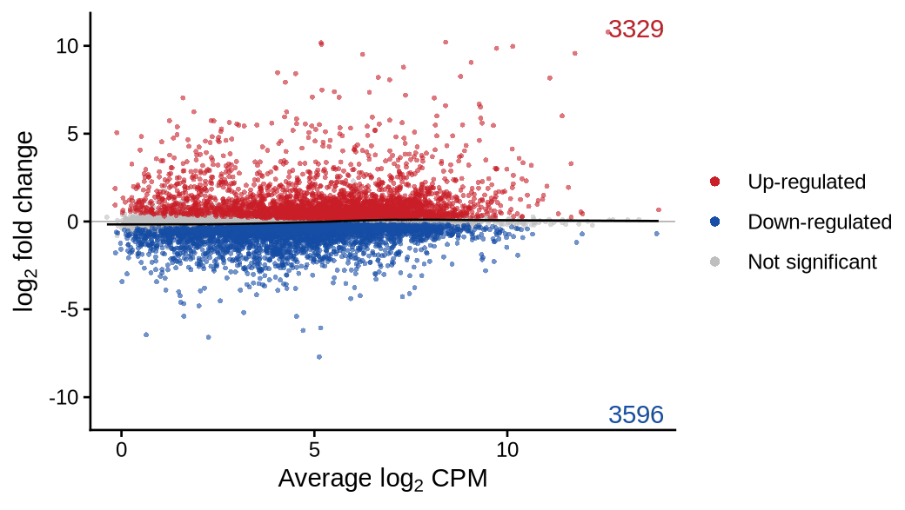

Question: which genes change between two conditions, by how much, and how does that depend on their expression level?
| Function | Use |
|---|---|
standardize_de() |
read any DE table into standard columns (used by every DE plot) |
plot_volcano() |
fold change against significance |
plot_ma() |
fold change against mean expression |
filter_de_genes() |
up- and down-regulated genes as two tables |
rank_de_genes(),
generate_de_rank_file()
|
genes ranked by signed significance, for GSEA |
Data: macrophages of 6 donors, naive or stimulated
with interferon-γ (IFN-γ) (Alasoo et
al. 2018). The same comparison is tested with edgeR and with DESeq2,
paired by donor (design ~ donor + condition), to show that
the plots read either.
mac <- docs_macrophage()
keep <- mac$samples$condition %in% c("naive", "IFNg")
counts <- filter_low_expression_genes(mac$counts[, keep], min_group_size = 6)
samples <- droplevels(mac$samples[keep, ])
# edgeR quasi-likelihood test
design <- model.matrix(~ donor + condition, data = samples)
y <- edgeR::normLibSizes(edgeR::DGEList(counts))
fit <- edgeR::glmQLFit(y, design)
test <- edgeR::glmQLFTest(fit, coef = "conditionIFNg")
de_edger <- edgeR::topTags(test, n = Inf)
# DESeq2 Wald test, with shrunken fold changes
dds <- DESeq2::DESeqDataSetFromMatrix(
counts,
samples,
design = ~ donor + condition
)
dds <- DESeq2::DESeq(dds, quiet = TRUE)
de_deseq <- DESeq2::results(dds, name = "condition_IFNg_vs_naive")
shrunk <- DESeq2::lfcShrink(
dds,
coef = "condition_IFNg_vs_naive",
type = "normal",
quiet = TRUE
)
de_deseq$log2FoldChange_shrunk <- shrunk$log2FoldChangeFold-change shrinkage pulls the noisy fold changes of lowly expressed
genes towards 0. type = "normal" is built into DESeq2; its
authors recommend type = "apeglm" (package apeglm) or
"ashr" when installed.
Reading DE tables
Every DE plot of the package reads its input with
standardize_de(), which recognises edgeR, DESeq2, limma and
Seurat tables from their column names and returns standard columns
(feature, logfc, pvalue,
padj, mean_expr, then the table’s other
columns):
head(standardize_de(de_edger), 3)
#> Detected edgeR results (logFC, PValue, FDR)
#> feature logfc pvalue padj mean_expr F
#> 1 LINC01645 -6.445168 6.906463e-11 8.637223e-07 0.6412643 385.2972
#> 2 TAGAP 3.291148 2.793358e-10 1.119023e-06 7.3802895 1844.1143
#> 3 NOD2 3.386661 2.828302e-10 1.119023e-06 5.6846857 1838.0587
head(standardize_de(de_deseq, logfc.col = "log2FoldChange_shrunk"), 3)
#> Detected DESeq2 results (log2FoldChange, pvalue, padj)
#> 4 p-values of 0 replaced by 2.55999999769412e-315 (a tenth of the smallest non-zero value)
#> 4 adjusted p-values of 0 replaced by 6.41000000000069e-312 (a tenth of the smallest non-zero value)
#> feature logfc pvalue padj mean_expr log2FoldChange
#> 1 SPP1 -0.6664640 1.908393e-03 4.255770e-03 556815.1 -0.6902862
#> 2 ACTB 0.6581395 1.336112e-12 1.175064e-11 574651.6 0.6628589
#> 3 FTL 0.1154071 3.866035e-01 4.721085e-01 404628.0 0.1122727
#> lfcSE stat
#> 1 0.22237667 -3.1041303
#> 2 0.09348526 7.0905178
#> 3 0.12967607 0.8657933| method | log fold change | p-value | adjusted p | mean expression |
|---|---|---|---|---|
| edgeR | logFC |
PValue |
FDR |
logCPM (log2) |
| DESeq2 | log2FoldChange |
pvalue |
padj |
baseMean (linear) |
| limma | logFC |
P.Value |
adj.P.Val |
AveExpr (log2) |
| Seurat | avg_log2FC |
p_val |
p_val_adj |
none |
Any other table works with the columns given explicitly
(logfc.col, p.col, padj.col,
mean.col, feature.col); the same arguments are
accepted by every DE plot. p-values of exactly 0 (underflow) are
replaced by a tenth of the smallest non-zero value, and NA p-values
(DESeq2’s independent filtering) are treated as not significant.
Volcano plot
plot_volcano(de_edger, label.n = 6)
The y-axis is the −log10 adjusted p-value, the value
that decides significance, so the dashed line is the
padj.cutoff. The label.n most significant
genes of each direction are labelled (10 by default), among them
interferon-γ targets such as IRF1, APOL4 and
UBD.
Variants
A minimum absolute fold change for significance, drawn as dashed lines:
plot_volcano(de_edger, logfc.cutoff = 2, label.n = 5)
label = "selected" labels only the genes given,
significant or not; label = "top" with
label.features adds them to the top genes:
plot_volcano(
de_edger,
label = "selected",
label.features = c("STAT1", "IRF1", "CIITA", "HLA-DRA", "ACTB")
)
The top genes ranked by "padj" (default),
"logfc" or "product" of both:
plot_volcano(de_edger, label.rank = "product", label.n = 6)
"arrow" names the directions with arrows and counts at
the top (and drops the legend); "none" hides the
counts:
plot_volcano(
de_edger,
annotate.counts = "arrow",
up.label = "Up in IFN-γ",
down.label = "Down in IFN-γ",
label.n = 5
)
Colours named up, down, ns
(any of them):
plot_volcano(
de_deseq,
logfc.col = "log2FoldChange_shrunk",
label = "none",
cols = c(up = "#B5338A", down = "#2C5DA8")
)
MA plot
Fold change against mean expression shows how both depend on the
expression level. edgeR’s logCPM is already log2 and drawn
as it is:
plot_ma(de_edger, label.n = 5)
Variants
DESeq2’s baseMean is linear and drawn on a log10 axis
(mean.scale is taken from the method). With shrunken fold
changes, the lowly expressed genes on the left no longer fan out:
plot_ma(
de_deseq,
logfc.col = "log2FoldChange_shrunk",
label.n = 5
)
The same genes without shrinkage, for comparison:
plot_ma(de_deseq, label = "none")A robust trend line (lowess) through all genes: a trend away from 0 would point to an expression-dependent bias, such as a normalization problem.
plot_ma(de_edger, trend = TRUE, label = "none")
Gene lists
filter_de_genes() splits a DE table into up- and
down-regulated genes (the rows of the table, with all its columns), by
adjusted p-value and absolute fold change:
de_lists <- filter_de_genes(
as.data.frame(de_edger),
padj.cutoff = 0.05,
logfc.cutoff = 1
)
#> Detected edgeR results (logFC, FDR)
vapply(de_lists, nrow, integer(1))
#> up_reg down_reg
#> 1061 936
head(rownames(de_lists$up_reg))
#> [1] "TAGAP" "NOD2" "UBD" "LRRK2" "IRF1" "APOL4"rank_de_genes() ranks all genes by the signed
significance −log10(adjusted p) × sign(log fold change), the “pi-value”:
strongly up-regulated genes first, strongly down-regulated last.
generate_de_rank_file() returns (and with
file, writes) the two-column .rnk table of the
GSEA desktop application:
ranked <- rank_de_genes(as.data.frame(de_edger))
head(ranked[c("logFC", "FDR", "piValue", "rank")], 3)
#> logFC FDR piValue rank
#> TAGAP 3.291148 1.119023e-06 5.951161 1
#> NOD2 3.386661 1.119023e-06 5.951161 2
#> UBD 10.178219 1.119023e-06 5.951161 3
# file = "ifng.rnk" writes it
rnk <- generate_de_rank_file(as.data.frame(de_edger))
head(rnk, 3)
#> GeneName rank
#> 1 TAGAP 5.951161
#> 2 NOD2 5.951161
#> 3 UBD 5.951161For fgsea or clusterProfiler, the ranking is a named vector:
setNames(rnk$rank, rnk$GeneName) (see Gene-set enrichment). Many genes share the
largest −log10 adjusted p-values; ranking by the test statistic (edgeR
F with the fold change sign, DESeq2 stat)
breaks such ties and is a common alternative.
These three functions take the same method,
logfc.col and padj.col as the plots (renamed
in 0.10.0 from de_method, log2fc_col,
pvalue_col; the old names still work, with a deprecation
warning).